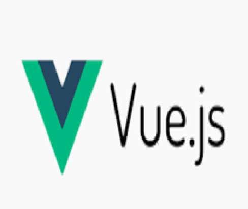

Voltar à Página Inicial
Conceito
É um framework JavaScript open source para a criação de aplicações web, criado por Evan You em 2014. O Vue.js possibilita criar aplicações de forma reativa.
Forma de Utilização
O Vue.js faz a utilização de um DOM virtual, o que faz com que seja extremamente performático na maioria das situações. Além disso, conta com uma arquitetura muito bem estruturada por meio da criação de componentes reusáveis.
Vantagens
-
É um um framework progressivo extremamente leve e completo.
-
Documentação incrível, com conceitos, exemplos e dicas.
-
Fácil aprendizagem, o legal é que aqui você realmente pode começar fazendo muito com pouco conhecimento e a medida que for evoluindo agregar mais conhecimento.
Desvantagens
-
Menos recursos prontos na comunidade, isso tem diminuído a cada dia, mas ainda é mais restrito o número de bibliotecas e funcionalidades prontas, se comparadas ao react.